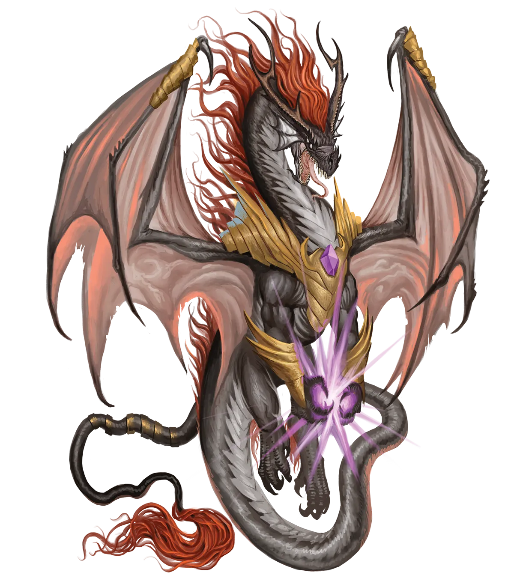
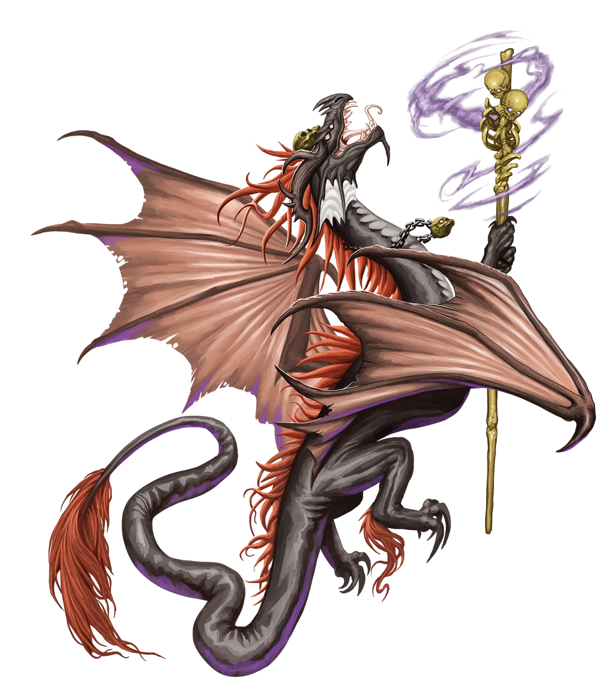

醒时梦魇
梦魇龙类的艺术以我们多数人的品味来看，相当怪异，但它们对自己的创作深信不疑，哪怕将噩梦培育成为艺术形式在旁人看来或许十分荒诞。失去了在梦境诸界轻松描绘噩梦景象之便的永恒梦魇龙类，会以惊人的方式表达那份创意。它们不再仅仅是凭空想象某物使其存在，而是必须规划、思考，然后构建。这些“醒时噩梦”展现了艺术家的足智多谋。
梦魇龙 Nightmare Dragon |
|
|
梦魇龙类在恐怖、惊惧，以及偶尔的宣泄方面堪称艺术家与作者。因此，传统派们大量时间都在梦境诸界中穿梭往来，塑造和雕琢凡人与不朽者沉睡时的噩梦，力求在技巧、风格以及所编织恐怖的精巧程度上超越彼此。尽管它们偶尔会与夜鬼婆等其他存在达成交易，但梦魇龙类通常会将更多时间花费在打磨自己的艺术上，必要时则向同侪展示。永恒光明仪式常常打乱梦魇龙类的常规计划，因为它会让龙类更难进入并雕琢噩梦，尤其是在仪式刚结束后的一段时间。正因如此，选择施行该仪式的梦魇龙类寥寥无几。那些因此成为永恒之龙的龙类，要么是出于绝望，要么是出于厌倦以及对在艺术上开拓先锋方向的渴望。通过剥夺自身与生俱来的雕琢噩梦的能力，它们必须学会运用其他媒介创作，而该仪式使它们成为惊人快速的学习者。这有可能让它们创造出非凡独特的作品，从而脱颖而出。就自身而言，传统主义的梦魇龙类对永光龙类摒弃公认艺术表达媒介之举嗤之以鼻。它们在意的正是这点，而非其他龙类施行了可能危险且改变人生的仪式。永恒梦魇龙类通常会很快发现，尽管梦境诸界是用梦境构建艺术与故事的完美之地，但对于那些决心尝试其他媒介的龙类来说，亲身前往沉睡者所在的界域，探索无穷的可能性，要好得多。物质位面尤其受到永恒梦魇龙类的青睐，因为那里有着各式各样的场景与角色，而梦魇龙类能通过窥探各种噩梦加以认识。 物质位面上的永恒梦魇龙类通常会先设立一个僻静的画室，尝试各种媒介以熟悉情况，但它们很快便会意识到，若想精进自身魔法并获取仪式的收益，就必须踏上冒险。然而，世界的运作方式未必符合它们基于噩梦经验所得出的预期。它们原以为稀松平常的种种事情，实际上却颇为罕见，例如从高处坠落、被无情的捕食者追赶，或被迫在意外赤身裸体时发表演讲。因此，它们会与当地人结伴，借助他们的帮助来理解这个世界，在其早期冒险中保护它们，并充当它们的知己或艺术试验的画布。梦魇龙类与那些包含喜爱恐怖或受惊体验的成员的团队相处极为融洽。与不喜爱这些的冒险者结伴也并非不可能，梦魇龙类可以将自身技艺更多地转向敌人而非盟友，但这会导致大量摩擦：龙类的艺术持续令其盟友不安，而龙类也因这些不识货的蠢货无法欣赏其才华而恼怒。梦魇龙类倾向于那些能使其以独特方式唤起恐惧的职业，尤其是通过艺术与梦境。吟游诗人与魔契师尤为常见，但即便是野蛮人等与此差异甚大的职业，对于以非典型方式展现恐惧艺术也可能是不错的选择。 醒时梦魇 梦魇龙类的艺术以我们多数人的品味来看，相当怪异，但它们对自己的创作深信不疑，哪怕将噩梦培育成为艺术形式在旁人看来或许十分荒诞。失去了在梦境诸界轻松描绘噩梦景象之便的永恒梦魇龙类，会以惊人的方式表达那份创意。它们不再仅仅是凭空想象某物使其存在，而是必须规划、思考，然后构建。这些“醒时噩梦”展现了艺术家的足智多谋。 梦魇龙特质 Nightmare Dragon Traits 你出身于一脉来自幻梦境、精于雕琢恐惧的艺术大师――梦魇龙世系。 |
  |